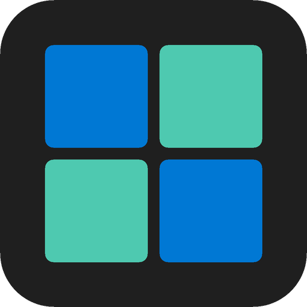
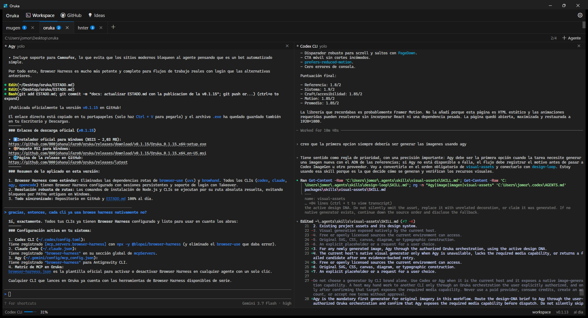

● Codeximplementando navegación
● Claude Coderevisando el diff
● Agygenerando recursos
Todo en contexto
Hasta cuatro terminales reales dentro del mismo proyecto.

orukaOruka reúne Codex, Claude Code, Agy y OpenCode en un escritorio local para que puedas dirigir el trabajo sin perseguir terminales.
Un escritorio tranquilo para ver quién trabaja, quién espera y qué cambió.
Hasta cuatro terminales reales dentro del mismo proyecto.
Activo, esperando o desconectado. Sin adivinar qué está ocurriendo.
Issues, cambios y revisiones viven junto al trabajo de tus agentes.
Oruka usa PTY reales. No imita tus CLIs: ejecuta las herramientas que ya utilizas, con sus sesiones y capacidades intactas.

Oruka detecta los agentes instalados y prepara un workspace compartido.
detección localCada agente conserva su propio contexto mientras tú mantienes la visión completa.
hasta 4 agentesConsulta el diff, las issues y el estado del proyecto en la misma ventana.
GitHub vía ghDescarga Oruka para Windows y convierte cuatro terminales separadas en una sola señal clara.
Obtener Oruka ↓